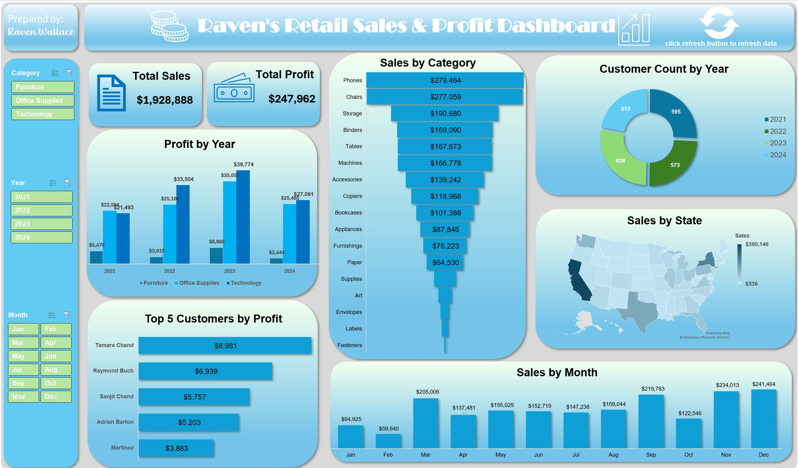
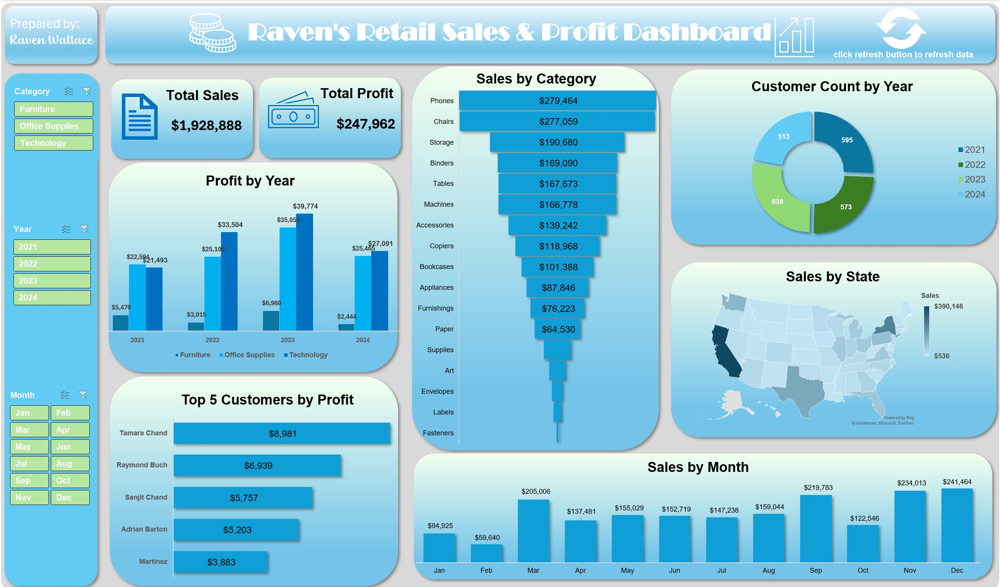
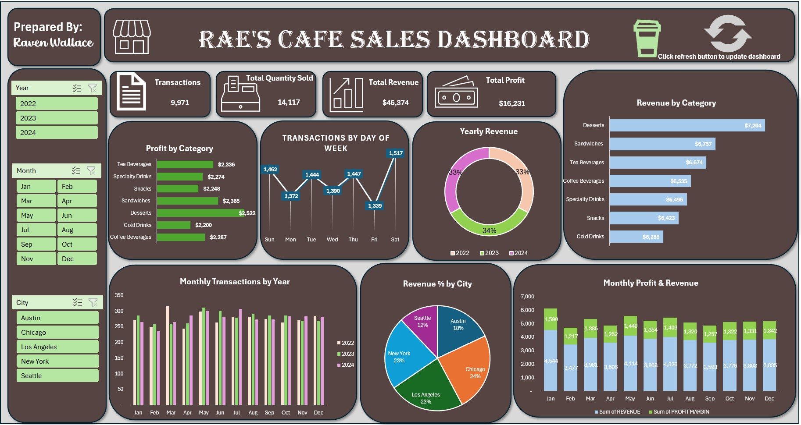

I made this super interactive/dynamic Tableau dashboard to analyze a year of (mock) sales for a pizza restaurant. The mock dataset consisted of almost 50,000 transactions. I started by writing a series of queries in SQL to clean/analyze the dataset. Then, I created my dashboard to display important performance metrics including peak hours/weeks, best & worst sellers, average order value, average # of pizzas per order, etc. The dashboard features a Home page and a Best & Worst sellers page.

In this project, I created a Power BI dashboard to analyze HR trends, using a mock data set of over 1,400 employees. The dashboard features a home page, a detail page and an action page.
 

In this project, I analyzed a set of over 8,000 mock retail sale transactions by creating an interactive Excel dashboard. My goal was to gain insight on total sales, total profit, profit by year, sales by category & state, and profitability by customer.

In this project, I created an excel dashboard to analyze a mock set of data on 100,000 airline passengers satisfaction survey ratings. I analyzed the data by travel type, class, customer type, age group and gender to figure out which customers were the most/least satisfied.

In this project, I created an interactive excel dashboard to analyze a mock set of data on a chain of coffee shop sales. I analyzed the data to figure out profitability by month, year, day of the week, region of the U.S. and product category. The dataset included ~10,000 transactions. Skills used include cleaning data and creating pivot tables, charts, macros & slicers.
In this project, I used real COVID-19 data to explore/analyze global infection rates, death rates and vaccination rates. Skills used include: joins, CTE's, creating temp tables, aggregating functions, creating views and converting data types.

After using SQL to analyze the COVID-19 data set, I created this dashboard in Tableau to visualize my results.

This file contains the queries I created in preparation for my pizza sales tableau dashboard.

I wrote a series of queries in SQL to clean a dataset of Nashville housing data.